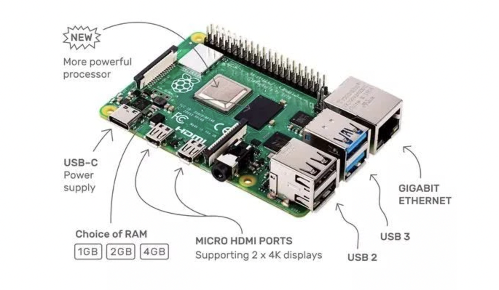

学习笔记 | 用 树莓派4 写嵌入式操作系统
这是我对官方 Operating System development tutorials in Rust on the Raspberry Pi 的学习笔记。
ARM 汇编基础
汇编语言源程序格式区别：
.s，操作: 汇编，不可以在这里面加入预处理的命令。.S，操作: 预处理 + 汇编，可以在这里面加入预处理的命令。.o，只编译不链接。
$ as program.s -o program.o
$ ld program.o -o program
汇编语言本质
使用助记符和缩写来编写能控制底层高低电平电路信号的二进制机器码（指令集）组合，就是汇编程序。这些助记符集合就叫汇编语言。使用汇编工具去将汇编语言转换成机器码的过程叫做汇编(assembling)。
指令集体系结构(Instruction Set Architecture, ISA)，简称体系结构或系统结构(architecture),它是软件和硬件之间接口的一个完整定义。 ISA定义了一台计算机可以执行的所有指令的集合，每条指令规定了计算机执行什么操作，所处理的操作数存放的地址空间以及操作数类型。指令集架构是一个能为电路硬件翻译应用程序的一层抽象层。
数据类型
操作：载入（load） 和 存储（store）
数据类型：有符号或无符号的 字/ 半字/ 字节。
ldr = Load Word
ldrh = Load unsigned Half Word
ldrsh = Load signed Half Word
ldrb = Load unsigned Byte
ldrsb = Load signed Bytes
str = Store Word
strh = Store unsigned Half Word
strsh = Store signed Half Word
strb = Store unsigned Byte
strsb = Store signed Byte
字节序列
查看内存的字节两种方式：小端模式（Little-Endian） 和 大端模式（Big-Endian）。
ARM 寄存器
共有 30 个 32 位通用寄存器。前 16 个寄存器（r0-15）可在用户级模式下访问，其他寄存器在特权软件执行中可用。
前 16 个寄存器可以分为两组：通用寄存器和特殊用途寄存器。
-
R0-R12：可用于常见操作期间存储临时值、指针（内存位置）等等。例如R0，在算术运算期间可以称为累加器，或用于存储调用的函数时返回的结果。R7在进行系统调用时非常有用，因为它存储了系统号，R11可帮助我们跟踪作为帧指针的堆栈上的边界（稍后将介绍）。此外，ARM上的函数调用约定函数的前四个参数存储在寄存器r0-r3中。 -
R13：SP（栈指针）。始终指向当前栈顶。 -
R14：LR（链接寄存器）。进行函数调用时，链接寄存器将更新为当前函数调用指令的下一个指令的地址，也就是函数调用返回后需要继续执行的指令。这么做是允许子函数调用完成后，在子函数中利用该寄存器保存的指令地址再返回到父函数中。 -
R15：PC（程序计数器）。程序计数器自动按执行的指令大小递增。此指令大小在 ARM 模式下始终为4个字节，在 THUMB 模式下为 2 个字节。执行分支指令时，PC 保存目标地址。在执行过程中，在 ARM 模式下 PC 将当前指令的地址加上 8（两个ARM指令），在 Thumb（v1）状态下则指令加上4（两个Thumb指令）。这与x86 中 PC 始终指向要执行的下一个指令不同。
ARM 模式 和 Thumb 模式
ARM 处理器主要有两种工作模式: ARM 状态 和 Thumb 状态。它们主要区别是指令集，在 ARM 模式下指令集始终是32-bit，但是在 Thumb 模式下可以是16-bit或者32-bit。学会怎么使用Thumb模式对于ARM开发很重要。
ARM模式和Thumb模式的态区别：
- 条件执行：在 ARM 模式下所有的指令都支持条件执行。一些版本的ARM处理器可以通过it指令在Thumb工作模式下支持条件执行。
- ARM 和 Thumb 模式下的32-bit指令：在 Thumb 模式下的
32-bit指令有.w后缀。 - 桶型位移器（barrel shifter）是ARM模式下的另一个特点。它可以将多条指令缩减为一条。例如，你可以通过向左位移1位的指令后缀将乘法运算直接包含在一条MOV指令中（将一个寄存器的值乘以2，再将结果MOV到另一个寄存器）:
MOV R1, R0, LSL#1 ;R1 = R0 * 2，而不需要使用专门的乘法指令来运算。
ARMv8 寄存器
-
参数寄存器（X0-X7）： 用作临时寄存器或可以保存的调用者保存的寄存器变量函数内的中间值，调用其他函数之间的值（8 个寄存器可用于传递参数）
-
来电保存的临时寄存器（X9-X15）： 如果调用者要求在任何这些寄存器中保留值调用另一个函数，调用者必须将受影响的寄存器保存在自己的堆栈中帧。 它们可以通过被调用的子程序进行修改，而无需保存并在返回调用者之前恢复它们。
-
被调用者保存的寄存器（X19-X29）： 这些寄存器保存在被调用者帧中。 它们可以被被调用者修改子程序，只要它们在返回之前保存并恢复。
-
特殊用途寄存器（X8，X16-X18，X29，X30）：
- X8： 是间接结果寄存器，用于保存子程序返回地址，尽量不使用
- X16 和 X17： 程序内调用临时寄存器
- X18： 平台寄存器，保留用于平台 ABI，尽量不使用
- X29： 帧指针寄存器（FP）
- X30： 链接寄存器（LR）
- X31： 堆栈指针寄存器 SP 或零寄存器 ZXR
异常向量表
在ARM体系结构中，存在7种异常处理。当异常发生时，处理器会把PC设置为一个特定的存储器地址。这一地址放在被称为向量表（vector table）的特定地址范围内，向量表的入口是一些跳转指令，跳转到专门处理某个异常或中断的子程序。
异常向量表地址说明：
0x00: 复位，进入 管理模式0x04: 未定义指令， 进入 未定义模式0x08: 软件中断，进入 管理模式0x0c: 中止（预取），进入 中止模式0x10: 中止（数据），进入 中止模式0x14: 保留0x18: 中断 IRQ ，进入 中断模式0x1c: 快中断 FIQ，进入 快中断模式
ARM指令简介
ARM指令后面通常跟着两个操作数，像下面这样的形式：
MNEMONIC{S}{condition} {Rd}, Operand1, Operand2
解释：
MNEMONIC - 操作指令（机器码对应的助记符）。
{S} - 可选后缀. 如果指定了该后缀，那么条件标志将根据操作结果进行更新。
{condition} - 执行指令所需满足的条件。
{Rd} - 目标寄存器，存储操作结果。
Operand1 - 第一操作数（寄存器或者立即数）
Operand2 - 第二操作数. 立即数或者带有位移操作后缀（可选）的寄存器。
condition字段与CPSR寄存器的值有关，准确的说是和CPSR某些位有关。Operand2也叫可变操作数，因为它可以有多种形式--立即数、寄存器、带有位移操作的寄存器。
例如Operand2可以有以下多种形式：
#123 - 立即数。
Rx - 寄存器x (如 R1, R2, R3 ...)。
Rx, ASR n - 寄存器x，算术右移n位 (1 = n = 32)。
Rx, LSL n - 寄存器x，逻辑左移n位 (0 = n = 31)。
Rx, LSR n - 寄存器x，逻辑右移n位 (1 = n = 32)。
Rx, ROR n - 寄存器x，循环右移n位 (1 = n = 31)。
Rx, RRX - 寄存器x，扩展的循环位移，右移1位。
示例：
ADD R0, R1, R2 - 将寄存器R1内的值与寄存器R2内的值相加，结果存储到R0。
ADD R0, R1, #2 - 将寄存器R1内的值加上立即数2，结果存储到R0。
MOVLE R0, #5 - 仅当满足条件LE（小于或等于）时，才将立即数5移动到R0（编译器会把它看作MOVLE R0, R0, #5）。
MOV R0, R1, LSL #1 - 将寄存器R1的内容向左移动一位然后移动到R0（Rd）。因此，如果R1值是2，它将向左移动一位，并变为4。然后将4移动到R0。
其他指令：

内存指令：加载（Load）和 存储（Stroe）
在ARM上数据必须从内存中加载到寄存器之后才能进行其他操作，而在x86上大部分指令都可以直接访问内存中的数据。
你只能使用LDR和STR指令访问内存。
三个基本偏移形式：
-
偏移形式：立即数作为偏移量
- 寻址模式：立即寻址
- 寻址模式：前变址寻址
- 寻址模式：后变址寻址
-
偏移形式：寄存器作为偏移量
- 寻址模式：立即寻址
- 寻址模式：前变址寻址
- 寻址模式：后变址寻址
-
偏移形式：缩放寄存器作为偏移量
- 寻址模式：立即寻址
- 寻址模式：前变址寻址
- 寻址模式：后变址寻址
示例 1：
LDR 用于将内存中的值加载到寄存器中，STR 用于将寄存器内的值存储到内存地址。
LDR R2, [R0] @ [R0] - R0中保存的值是源地址。
STR R2, [R1] @ [R1] - R1中保存的值是目标地址。
- LDR : 把R0内保存的值作为地址值，将该地址处的值加载到寄存器R2中。
- STR : 把R1内保存的值作为地址值，将寄存器R2中的值存储到该地址处。
有时你想要更有效率，一次加载（或存储）多个值。为此我们可以使用LDM（load multiple）和STM（stroe multiple）指令。
入栈和出栈
进程中有一个叫做栈的内存位置。栈指针（SP）寄存器总是指向栈内存中的地址。程序应用中通常使用栈来存储临时数据。前面讲的ARM中只能使用加载和存储来访问内存，就是只能使用LDR/STR指令或者他们的衍生指令（LDM、STM、LDMIA、LDMDA、STMDA等等）进行内存操作。在x86中使用PUSH和POP从栈内取或存，ARM中我们也可以使用这条指令。
条件状态和分支
下面的表格列出了可用的条件状态码，描述和标志位：

下面是条件代码和相反代码：

分支：
有三种类型的分支指令：
- 普通分支（B），简单的跳转到一个函数。
- 带链接的跳转（BL），将PC+4的值保存到LR寄存器，然后跳转。
- 带状态切换的跳转（BX）和带状态切换及链接的跳转（BLX），与B和BL一致，只是添加了工作状态的切换（ARM模式-Thumb模式）。需要寄存器作为第一个操作数。
栈和函数
一般而言，栈就是进程中的一段内存。这段内存是在进程创建时分配的。我们使用栈来保存一些临时数据，如函数中的局部变量，函数之间转换的环境变量等。使用PUSH和POP指令与栈进行交互。
为了让一切变得井然有序，函数使用栈帧（专门用于函数中使用的局部内存区域）。栈帧是在函数开始调用时创建的。栈帧指针（FP）被置为栈帧的底部，然后分配栈帧的缓冲区。栈帧中通常（从底部）保存了返回地址（前面的LR寄存器值）、栈帧指针、其他一些需要保存的寄存器、函数参数（如果超过4个参数）、局部变量等等。虽然栈帧的实际内容可能有所不同，但基本就这些。最后栈帧在函数结束时被销毁。
函数
函数体的结构：开始、执行体和收尾。
开始时需要保存程序前面的状态（LR和R11分别入栈）然后为函数的局部变量设置堆栈。虽然开始部分的实现可能因编译器而异，但通常是用PUSH/ADD/SUB指令来完成的。大体看起来是下面这样：
push {r11, lr} /* 将lr和r11入栈 */
add r11, sp, #0 /* 设置栈帧的底部位置 */
sub sp, sp, #16 /* 栈指针减去16为局部变量分配缓存区 */
函数体部分就是你程序的实际逻辑区，包含了你代码逻辑的各种指令：
mov r0, #1 /* 设置局部变量(a=1). 同时也为函数max的第一个参数 */
mov r1, #2 /* 设置局部变量(b=2). 同时也为函数max的第二个参数 */
bl max /* 调用函数max */
函数的最后部分用于将程序的状态还原到它初始的状态（函数调用前），这样就可以从函数被调用的地方继续执行。所以我们需要重新调整栈指针（SP）。
重新调整栈指针后，将之前（函数开始处）保存的寄存器值从堆栈弹出到相应的寄存器来还原这些寄存器值。根据函数类型，一般POP指令是函数最后结束的指令。但是，在还原寄存器值后，我们需要使用 BX 指令来离开函数。示例如下：
sub sp, r11, #0 /* 重新调整栈指针 */
pop {r11, pc} /* 恢复栈帧指针, 通过加载之前保存的LR到PC，程序跳转到之前LR保存位置。函数的栈帧被销毁 */
所以我们现在知道：
- 函数在开始时设置相应的环境。
- 函数体中执行相关逻辑，然后通过R0保存返回值。
- 函数收尾时恢复所有的状态，以便程序可以在函数调用前的位置继续执行。
叶子函数和非叶子函数
- 叶子函数，在函数内不会调用/跳转到另一个函数。
- 非叶子函数，则会在自己的函数逻辑中调用另一个函数。
代码示例
#![allow(unused)] fn main() { .section .data ; 这里.section常常省略 <初始化数据> .section .bss ; 这里.section常常省略 <未初始化数据> .section .text ; 这里.section常常省略 .global __start ; 如果其他文件调用__start，则需要.global声明 __start: ; 标签，相当于函数入口 <汇编代码> }
寻址方式：
- 立即数寻址。
ADD R0， R0， #0x3F - 寄存器寻址。
ADD R0, R1, R2 - 寄存器间接寻址。
LDR R0, [R2] ；相当于指针 - 基址变址寻址。
LDR R0, [R1, #4] - 相对寻址。
BL NECT ； NEXT为标签
定义类伪指令：
.global表明一个标号为全局.ascii定义字符串数据.byte定义字节数据.word定义字数据.data表明数据段.size设定指定符号的大小.type指定符号的类型
.data
varA:
.ascii "helloworld"
varB:
.word 0xff
varC:
.byte 0x1
.text
...
.equ 定义一个宏:
.equ DA, 0x89
mov r0, #DA
nop 空操作
mov r0, r0
wfi 和 wfe:
wfi (Wait for interrupt)和wfe (Wait for event)是两个让ARM核进入low-power standby模式的指令，由ARM architecture定义，由ARM core实现。spinlock实现一般和 wfe指令有关。
standby 一般为待机模式。
对WFI来说，执行WFI指令后，ARM core会立即进入low-power standby state，直到有WFI Wakeup events发生。
而WFE则稍微不同，执行WFE指令后，根据Event Register（一个单bit的寄存器，每个PE一个）的状态，有两种情况：如果Event Register为1，该指令会把它清零，然后执行完成（不会standby）；如果Event Register为0，和WFI类似，进入low-power standby state，直到有WFE Wakeup events发生。
跳转：
b 1b中的b是backward的意思，跳到程序的前面（往上）b 1f中的f是forward的意思，跳到程序的后面（往下）1表示标号（局部标号）。
参考
- https://www.zhihu.com/column/c_1215698269139152896
- https://azeria-labs.com/writing-arm-assembly-part-1/
- http://blog.leanote.com/post/tarena/ARM%E6%B1%87%E7%BC%96%E5%85%A5%E9%97%A8
- https://www.huaweicloud.com/articles/ca0de32c6bb0903b23de5dbcdfab3c5b.html
00: 准备工作
因为国内的环境，需要对原来的 Dockerfile 和 命令做一些更改。
更改 Dockerfile
打开 docker/rustembedded-osdev-utils/Dockerfile，找到# QEMU，更改 git 地址为下面这行：
# QEMU
git clone https://git.qemu.org/git/qemu.git;
更改 Makefile 中 Docker 命令
docker build 命令下要添加这一行：
--add-host raw.githubusercontent.com:185.199.111.133 \
这是为了避免无法解析 raw.githubusercontent.com 域名而为，IP地址如果不行，则请自行ping获取最新的。
构建本地 Docker 镜像
进入 docker 目录，执行命令：
> make
即可。
教程说明
包含一个独立可引导的二进制内核文件。前五章只能使用 Qemu 来运行，因为都是基础内容。到了第六章可以在树莓派上加载和运行内核并通过UART来观察输出结果。
代码组织和结构
-
src/_arch。针对特定目标架构的内核子系统，放到该目录下。_arch中的_表示此文件夹不属于标准模块层次结构。而是使用＃[path ="_arch/xxx/yyy.rs"]属性将其内容有条件地引入各自的文件中。 -
bsp/。 bsp 模块中定义BSP， 表示 Board Support Package。而且包含目标主板特殊的定义和功能。这些是诸如主板的内存映射或相应主板上的设备驱动程序实例之类的东西。
内核接口
arch和bsp都包含根据实际目标和主板不同而编译的代码。例如，interrupt controller对于硬件Raspberry Pi 3和Raspberry Pi 4是不同的，但是我们想让kernel剩下的代码可以轻松地适配它们。
通过 trait 接口来对其进行抽象是个很好的做法。
+-------------------+
| Interface (Trait) |
| |
+--+-------------+--+
^ ^
| |
| |
+----------+--+ +--+----------+
| kernel code | | bsp code |
| | | arch code |
+-------------+ +-------------+
嵌入式操作系统特点
嵌入式操作系统EOS（Embedded Operating System）是一种用途广泛的系统软件，过去它主要应用于工业控制和国防系统领域。EOS负责嵌入系统的全部软、硬件资源的分配、调度作，控制、协调并发活动；它必须体现其所在系统的特征，能够通过装卸某些模块来达到系统所要求的功能。
EOS是相对于一般操作系统而方的，它除具备了一般操作系统最基本的功能，如任务调度、同步机制、中断处理、文件处理等外，还有以下特点：
- 可装卸性。开放性、可伸缩性的体系结构。
- 强实时性。EOS实时性一般较强，可用于各种设备控制当中。
- 统一的接口。提供各种设备驱动接口。
- 操作方便、简单、提供友好的图形GUI，图形界面，追求易学易用。
- 提供强大的网络功能，支持TCP/IP协议及其它协议，提供TCP/UDP/IP/PPP协议支持及统一的MAC访问层接口，为各种移动计算设备预留接口。
- 强稳定性，弱交互性。嵌入式系统一旦开始运行就不需要用户过多的干预，这就要负责系统管理的EOS具有较强的稳定性。嵌入式操作系统的用户接口一般不提供操作命令，它通过系统的调用命令向用户程序提供服务。
- 固化代码。在嵌入式系统中，嵌入式操作系统和应用软件被固化在嵌入式系统计算机的ROM中。辅助存储器在嵌入式系统中很少使用，因此，嵌入式操作系统的文件管理功能应该能够很容易地拆卸，而用各种内存文件系统。
- 更好的硬件适应性，也就是良好的移植性。
树莓派简介
因为手头有一个树莓派4b，吃灰一年了，现在就用它先来跟随这个教程实现一个嵌入式 OS 吧。
树莓派4b的核心处理器（SoC）为博通 BCM2711（四核1.5GHz，Cortex A72架构，树莓派3是四核A53），LPDDR4内存，由5V/3A USB-C供电或GPIO 5V。
树莓派上面可以安装的操作系统有很多：Raspbian/ Pidora/ Arch/ Kali Linux/ OSMC/ Ubuntu MATE/ Ubuntu Core/ Ubuntu Server/ LibreELEC/ Mozilla WebThings/ CentOS/ ChromiumOS 等等（参考：https://zhuanlan.zhihu.com/p/105299943）。

ARM 架构
- ARM 架构使用 精简指令集（RISC），而 x86 使用复杂指令集（CISC)。
- ARM 处理器是低功耗处理器。
- ARM 对应 ARMv8 64位架构，有两种执行模式
AArch32和AArch64。Intel 的 64位指令集 x86-64（有时简称为x64）实际是 AMD 设计开发的。
Cortex-A72
树莓派4b采用的 Cortex-A72 是目前基于 ARMv8-A 架构处理器中使用最广泛的处理器之一，主要其应用市场包括高端智能手机、大屏幕的移动设备、企业网路设备、服务器、无线基台、数字电视。
ARMv8-aarch64 寄存器和指令集
异常等级
软件运行异常级别：
- EL0： 普通用户应用程序
- EL1： 操作系统内核通常被描述为特权
- EL2： 管理程序
- EL3： 低级固件，包括安全监视器
ARMv8 寄存器
AArch 拥有 31 个通用寄存器，系统运行在 64 位状态下的时候名字叫 Xn，运行在 32 位的时候就叫 Wn.
ARM 64 位架构的 ABI
ARM 体系结构的应用程序二进制接口（ABI， Application Binary Interface）指定了基本规则所有可执行的本机代码模块必须遵守，以便它们可以正常工作。
ARM 汇编语言基础
参考：
- https://cloud-atlas.readthedocs.io/zh_CN/latest/arm/hardware/index.html
- https://zhuanlan.zhihu.com/p/21266987
- https://zhuanlan.zhihu.com/p/95028674
- https://winddoing.github.io/post/7190.html
- https://zhuanlan.zhihu.com/p/82490125
Chapter 1 ：Wait Forever
这一章的内容很简单，就是构建了一个死循环。还没有任何内核代码。
代码解释
一、先看 main.rs ：
#![allow(unused)] #![feature(asm)] #![feature(global_asm)] #![no_main] #![no_std] fn main() { mod bsp; mod cpu; mod panic_wait; // Kernel code coming next tutorial. }
这段代码中，用到了两个 Feature Gate : #![feature(asm)] 和 #![feature(global_asm)]，只有Nightly Rust 下才可以用它们，这表示我们要使用内联汇编功能。
注意另外也用了 #![no_main] 和 #![no_std]，因为现在是面向 bare metal 编程，无法使用标准库。
二、 再看 cpu 模块：
#![allow(unused)] fn main() { // cpu/boot.rs #[cfg(target_arch = "aarch64")] #[path = "../_arch/aarch64/cpu/boot.rs"] mod arch_boot; }
这个通过 #[path = "../_arch/aarch64/cpu/boot.rs"]来指定具体的模块路径，实际上是 _arch/aarch64/cpu/boot.rs。
#![allow(unused)] fn main() { // _arch/aarch64/cpu/boot.rs global_asm!(include_str!("boot.s")); }
而这个 boot.rs 中则使用 global_asm! 来加载外部汇编源码文件boot.s。
三、 汇编代码释疑
#![allow(unused)] fn main() { //-------------------------------------------------------------------------------------------------- // Public Code //-------------------------------------------------------------------------------------------------- .section .text._start //------------------------------------------------------------------------------ // fn _start() //------------------------------------------------------------------------------ _start: // Infinitely wait for events (aka "park the core"). 1: wfe // 设置 标签 1，使用指令 wfe ，等待某个事件，让 ARM 核进入待机模式 b 1b // 跳转回 标签 1 .size _start, . - _start .type _start, function .global _start }
这段汇编代码是 ARM 汇编，结合相关汇编知识，我们可以看出，这段代码是将整个程序设置为待机模式。
此处穿插一些相关的 ARM 汇编基础：
wfi和wfe:
wfi (Wait for interrupt)和wfe (Wait for event)是两个让ARM核进入low-power standby模式的指令，由ARM architecture定义，由ARM core实现。spinlock实现一般和wfe指令有关。standby 一般为待机模式。
对WFI来说，执行WFI指令后，ARM core会立即进入low-power standby state，直到有WFI Wakeup events发生。
而WFE则稍微不同，执行WFE指令后，根据Event Register（一个单bit的寄存器，每个PE一个）的状态，有两种情况：如果Event Register为1，该指令会把它清零，然后执行完成（不会standby）；如果Event Register为0，和WFI类似，进入low-power standby state，直到有WFE Wakeup events发生。
四、 BSP
因为现在只能用 qemu，所以 BSP 就暂时无效。
五、 Panic Handler
在标准库中，Panic 已经被定义。但是在不使用标准库的 no-std 环境，Panic 属于未定义，所以我们需要定义它的行为。
#![allow(unused)] fn main() { // panic_wait.rs use core::panic::PanicInfo; #[panic_handler] fn panic(_info: &PanicInfo) -> ! { unimplemented!() } }
＃[panic_handler]用于定义恐慌的行为！在＃！[no_std]应用程序中。 ＃[panic_handler]属性必须应用于签名为fn（＆PanicInfo）-> ! 的函数。 并且该函数必须在 binary / dylib / cdylib crate 的依赖关系图中出现一次。
鉴于嵌入式系统的范围从用户面临的问题到对安全至关重要的问题（不会崩溃），没有一种大小适合所有恐慌行为，但是有很多常用行为。 这些常见行为已打包到定义＃[panic_handler]函数的 crate 中。 一些示例包括：
- panic-abort 。Panic 会导致执行中止（abort）指令。
- panic-halt 。Panic 会导致程序或当前线程通过进入无限循环而暂停。
- panic-itm 。Panic 消息是使用ITM（ARM Cortex-M特定的外围设备）记录的。
- panic-semihosting 。Panic 消息将使用半主机（semihosting）技术记录到主机。
参考： https://docs.rust-embedded.org/book/start/panicking.html
六、 build.rs
// build.rs use std::env; fn main() { let linker_file = env::var("LINKER_FILE").unwrap(); println!("cargo:rerun-if-changed={}", linker_file); println!("cargo:rerun-if-changed=build.rs"); }
使用 build.rs 来传递 LINKER_FILE，目前用不到。等第六章可以使用树莓派实体的时候就可以用了。
观察代码运行结果
在 01_wait_forever 目录下执行命令：
> make qemu
注意：不要更改 Makefile 中默认的 rpi3 为 rpi4，不支持。
输出结果：
#![allow(unused)] fn main() { Launching QEMU ---------------- IN: 0x00000000: 580000c0 ldr x0, #0x18 0x00000004: aa1f03e1 mov x1, xzr // 写入 xzr 寄存器的数据被忽略，读出的数据全为0，此处为初始化寄存器 x1,x2,x3 0x00000008: aa1f03e2 mov x2, xzr 0x0000000c: aa1f03e3 mov x3, xzr 0x00000010: 58000084 ldr x4, #0x20 0x00000014: d61f0080 br x4 ---------------- IN: 0x00080000: d503205f wfe // wef 进入 待机模式 0x00080004: 17ffffff b #0x80000 // 跳转到 地址 0x00080000 ---------------- IN: 0x00000300: d2801b05 mov x5, #0xd8 // 从 #0xd8 移动数据到 寄存器 x5，额外工作 // mrs 状态寄存器到通用寄存器的传送指令 0x00000304: d53800a6 mrs x6, mpidr_el1 // mpidr_el1 寄存器在多处理器系统中，为调度提供一个额外的PE（process element）识别机制 0x00000308: 924004c6 and x6, x6, #3 // #3的值与06相位与后的值传送到X6 0x0000030c: d503205f wfe 0x00000310: f86678a4 ldr x4, [x5, x6, lsl #3] 0x00000314: b4ffffc4 cbz x4, #0x30c // CBZ ;比较（Compare），如果结果为零（Zero）就转移（只能跳到后面的指令），此处跳转到 地址 0x0000030c ---------------- IN: 0x00000300: d2801b05 mov x5, #0xd8 0x00000304: d53800a6 mrs x6, mpidr_el1 0x00000308: 924004c6 and x6, x6, #3 0x0000030c: d503205f wfe 0x00000310: f86678a4 ldr x4, [x5, x6, lsl #3] 0x00000314: b4ffffc4 cbz x4, #0x30c // CBZ ;比较（Compare），如果结果为零（Zero）就转移（只能跳到后面的指令），此处跳转到 地址 0x0000030c ---------------- IN: 0x0000030c: d503205f wfe 0x00000310: f86678a4 ldr x4, [x5, x6, lsl #3] 0x00000314: b4ffffc4 cbz x4, #0x30c ---------------- IN: 0x00000300: d2801b05 mov x5, #0xd8 0x00000304: d53800a6 mrs x6, mpidr_el1 0x00000308: 924004c6 and x6, x6, #3 0x0000030c: d503205f wfe 0x00000310: f86678a4 ldr x4, [x5, x6, lsl #3] 0x00000314: b4ffffc4 cbz x4, #0x30c // CBZ ;比较（Compare），如果结果为零（Zero）就转移（只能跳到后面的指令），此处跳转到 地址 0x0000030c ---------------- IN: 0x0000030c: d503205f wfe 0x00000310: f86678a4 ldr x4, [x5, x6, lsl #3] 0x00000314: b4ffffc4 cbz x4, #0x30c // CBZ ;比较（Compare），如果结果为零（Zero）就转移（只能跳到后面的指令），此处跳转到 地址 0x0000030c }
CPU 可以通过物理地址来 逐字节 访问物理内存中保存的 数据，通常以 0x80000开头。